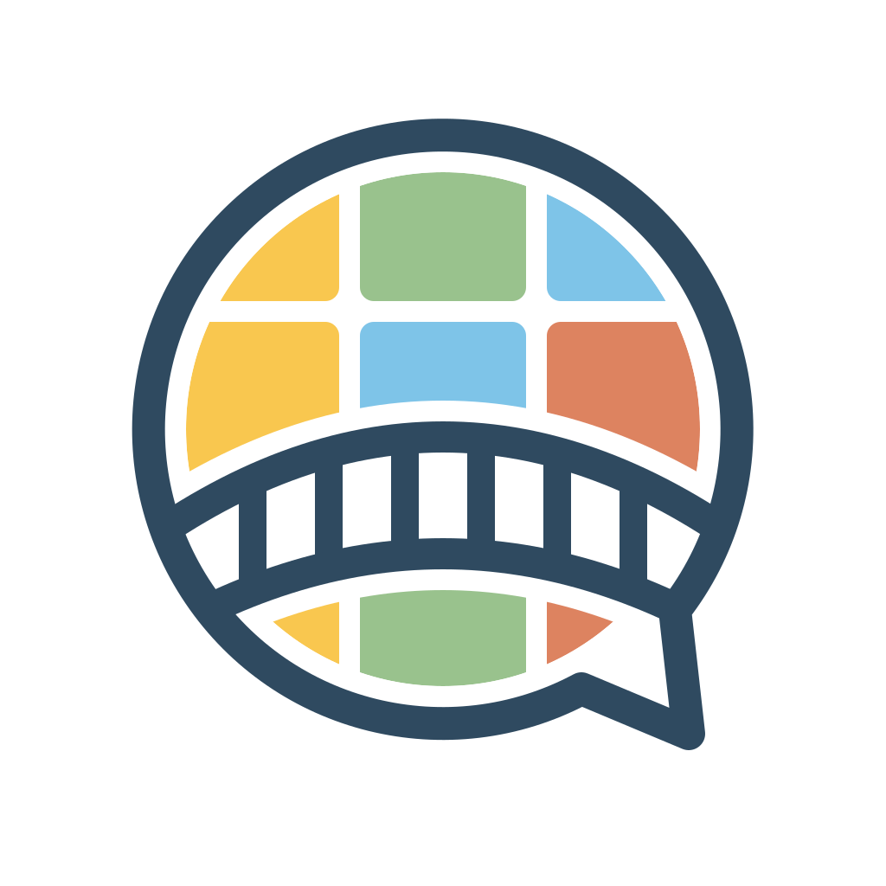

A free AAC app that turns taps into speech. Build sentences from pictures and hear them spoken with natural voices that work offline.
Runs on iPad, iPhone, Android, Chromebook, Windows, Mac and Linux. No accounts, no ads, no tracking.